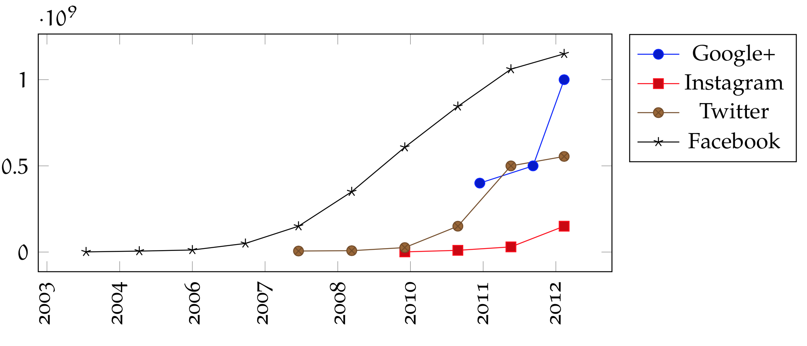

Thesis submitted at the Faculty of Mathematics and Computer Science at the University of Leipzig
in order to attain the academic degree Doctor rerum naturalium (Dr. rer. nat)
in Computer Science
Background

Types of Social Networks I
Social Connections
Facebook, Google+, …
keep in touch with friends and family
more or less private content
Multimedia Sharing
Vimeo, Picasa, …
users more or less want to share content
public and private content
Professional Networks
LinkedIn, Xing, …
used for recruiting and finding business partners
business related personal content (such as CV data)
Youtube
Types of Social Networks II
Informational Networks
StackOverflow, wer-weiss-was.de, …
content is question or topic based
users search for answers or want to get credits
Academic and Educational Networks
Research Gate, The Student Room, …
users search for collaboration partners
Hobbies based Social Networks
YardShare, DigTheDirt, …
connect people with a specific hobby or around as specific topic
In 2010, Facebook introduced a personal information aggregation feature call connections.
Clicking a Like button as well as visiting the page creates a connection between a facebook user and the website resource.
Facebook treats such relationships as public information.
The process of deleting a Facebook account and its data is continuously criticized by multiple organizations.
In 2010, Facebook began allowing users to permanently delete their accounts in order to react on critical articles (e.g. from the New York Times).
Motivation – Extensibility
In 2013, Google disabled the Google+ feature to embed videos from Vimeo in its posts (Vimeo is a competitor to Googles own video-sharing platform Youtube).
Motivation – Reliability
The microblogging service Twitter has a long history of outages.
Its error message fail whale is a synonym for an unreliable service.


{kind=link}


{kind=link}


{kind=link}